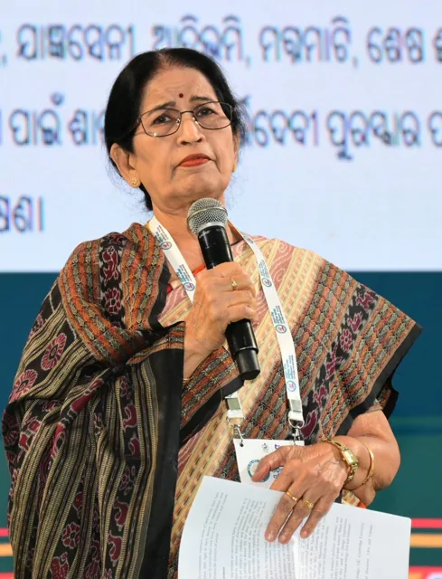

Contours of Feminism in Pratibha Ray’s Yajnaseni : An Assessment
Read in book
Dr Pratibha Ray occupies a significant place in Indian feminist literature for her exploration of women’s identity, dignity, and resistance to patriarchal oppression. Her novels reflect a feminist consciousness that aligns with various strands of feminist theory while maintaining a distinct cultural and humanistic perspective. While examined through feminist theoretical frameworks and compared with other Indian feminist writers, her contribution establishes both similarities and unique ideological positions.
Feminist theory broadly focuses on exposing gender inequality, challenging patriarchal structures, and asserting women’s autonomy. Pratibha Ray’s novels strongly engage with these concerns through her portrayal of women’s psychological struggles, social restrictions, and search for identity.
Liberal feminism advocates equal opportunities, education, and recognition of women as independent individuals. Her works strongly reflect this approach. Her female characters seek dignity, respect, and moral recognition within society rather than complete rejection of social institutions.
In Yajnaseni, Draupadi questions her treatment as a property in the hands of the patriarchal society and demands moral accountability from her husbands and society. She highlights women’s right to self-respect, emotional expression, and intellectual participation, which aligns closely with liberal feminist ideals.
Unlike this , radical feminism examines how patriarchal structures systematically control women’s bodies, sexuality, and identity. Pratibha Ray exposes these structures through mythological reinterpretation and social critique. In Yajnaseni, Draupadi’s humiliation in the royal court reveals the deep-rooted objectification of women in patriarchal culture. She demonstrates how women are often reduced to symbols of male honor, thus exposing gender-based power dynamics. However, unlike radical feminist writers who call for complete dismantling of patriarchy, Pratibha Ray advocates reform and moral transformation.
Hence, Pratibha Ray’s feminism is deeply rooted in Indian cultural traditions and spiritual philosophy. She always emphasizes women’s emotional strength, moral wisdom, and nurturing power. Her works suggest that empowerment can coexist with cultural identity rather than rejecting tradition entirely. This approach represents a balanced and culturally grounded feminist perspective.
In Pan- Indian context Mahasweta Devi’s feminism is strongly political and activist-oriented. Her works, such as Draupadi, portray women as symbols of resistance against state oppression, class exploitation, and patriarchal violence. Het female characters often respond through direct rebellion and confrontation. In contrast, Pratibha Ray presents resistance through introspection, emotional resilience, and ethical questioning. While Mahasweta’s feminism is radical and revolutionary, Ray’s feminism is philosophical and humanistic. Similarly, while Anita Desai focuses primarily on psychological feminism, exploring women’s inner conflicts, emotional isolation, and identity crises. Her novels highlight personal struggles rather than social activism. On the other hand Pratibha Ray while also exploring psychological depth places her characters within broader social, cultural, and historical contexts. Pratibha Ray’s feminism therefore combines psychological realism with social criticism, whereas Desai concentrates more on individual consciousness.
Shashi Deshpande , another prominent feminist writer, portrays middle-class Indian women struggling within domestic and social boundaries. Her feminism emphasizes everyday oppression and women’s quest for self-expression within family structures. Undoubtedly, Pratibha Ray shares Deshpande’s concern for women’s identity but extends it through mythological reinterpretation and historical perspective. Her characters often symbolize universal female experiences, whereas Deshpande focuses more on realistic domestic struggles. If we compare Kamala Markandaya’s writings, she highlights women’s endurance and adaptability within changing socio-economic environments. Her feminism portrays women’s resilience in the face of poverty, colonial influence, and modernization. Pratibha Ray similarly portrays women’s endurance but places greater emphasis on cultural and spiritual identity. Markandaya’s feminism is socio-economic, while Ray’s feminism is more philosophical and cultural.
Therefore, Pratibha Ray’s feminist vision stands out because of integration of myth, history, and modern feminist thought, emphasis on moral and spiritual empowerment, balanced critique of patriarchy without rejecting cultural traditions and focus on women’s emotional and ethical strength.
Her reinterpretation of mythological women, particularly Draupadi, provides a unique feminist re-reading of Indian epics.
Pratibha Ray’s Yajnaseni reflect a distinct multidimensional feminist consciousness that incorporates liberal, radical, and cultural feminist ideas. While she shares concerns with other Indian feminist writers such as Mahasweta Devi, Anita Desai, Shashi Deshpande, and Kamala Markandaya, she distinguishes herself through her humanistic and culturally rooted feminist philosophy. Her works demonstrate that feminism in Indian literature is not uniform but shaped by diverse historical, social, and cultural experiences.
She stands out as a distinct voice in Indian feminist literature landscape and deserves eminence in the field.